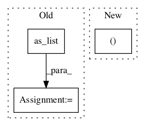

d86360af087d51f5e2cb2f9e57ddc95207fc3cd4,deeppavlov/core/layers/tf_layers.py,,cudnn_gru,#Any#Any#Any#Any#Any#Any#Any#Any#,498
Before Change
with tf.variable_scope(name, reuse=reuse):
gru = tf.contrib.cudnn_rnn.CudnnGRU(num_layers=n_layers,
num_units=n_hidden,
input_size=units .get_shape().as_list()[-1])
param = tf.get_variable("gru_params", initializer=tf.random_uniform(
[gru.params_size()], -0.1, 0.1), validate_shape=False)
if trainable_initial_states:
init_h = tf.get_variable("init_h", [1, 1, n_hidden])
init_h = tf.tile(init_h, (1, tf.shape(units)[0], 1))After Change
initial_h = input_initial_h or init_h
h, h_last = gru(tf.transpose(units, (1, 0, 2)), (initial_h, ) )
h = tf.transpose(h, (1, 0, 2))
// Extract last states if they are provided
if seq_lengths is not None:In pattern: SUPERPATTERN
Frequency: 3
Non-data size: 3
Instances Project Name: deepmipt/DeepPavlov
Commit Name: d86360af087d51f5e2cb2f9e57ddc95207fc3cd4
Time:
Author: null
File Name: deeppavlov/core/layers/tf_layers.py
Class Name:
Method Name: cudnn_gru
Project Name: deepchem/deepchem
Commit Name: b68db1aaf6abe4d2cea8321cc6f1564228dd60f5
Time:
Author: null
File Name: deepchem/models/layers.py
Class Name: AtomicConvolution
Method Name: call
Project Name: deepmipt/DeepPavlov
Commit Name: d86360af087d51f5e2cb2f9e57ddc95207fc3cd4
Time:
Author: null
File Name: deeppavlov/core/layers/tf_layers.py
Class Name:
Method Name: cudnn_lstm